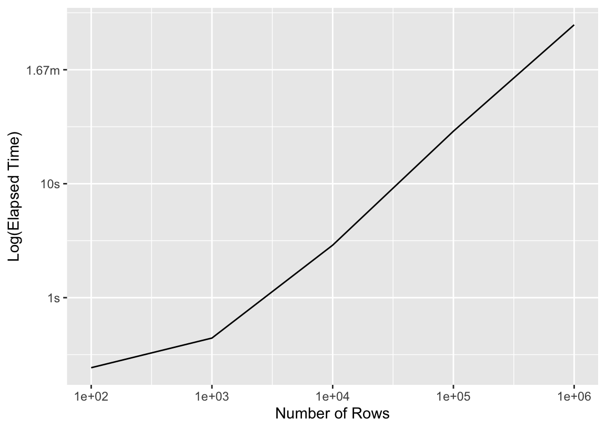
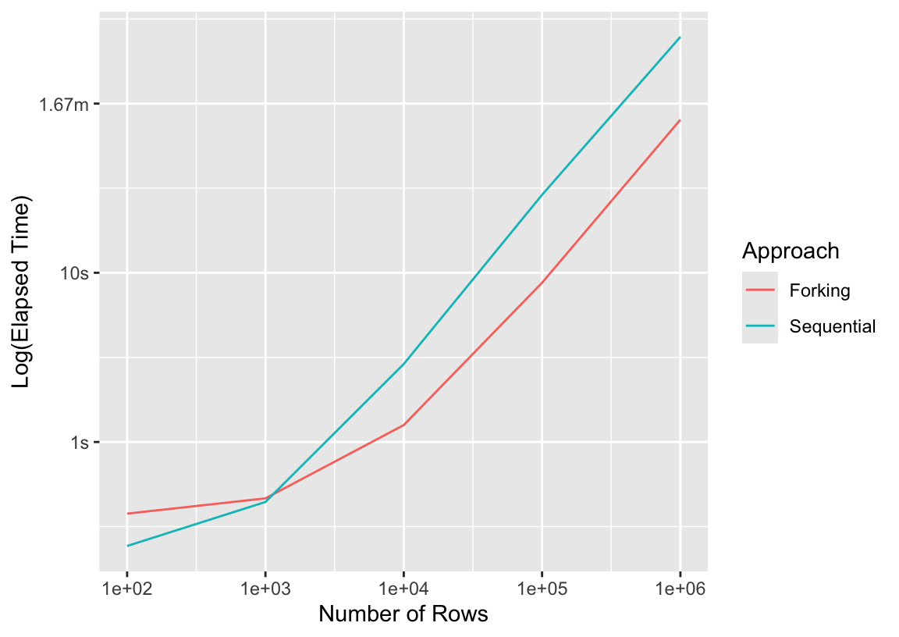
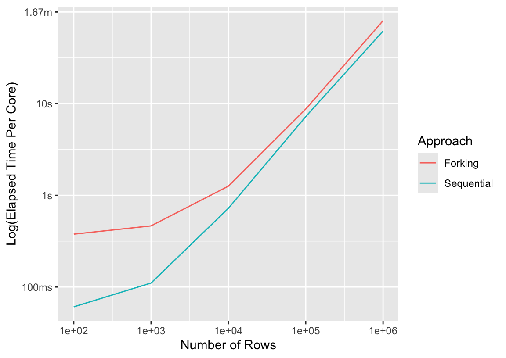
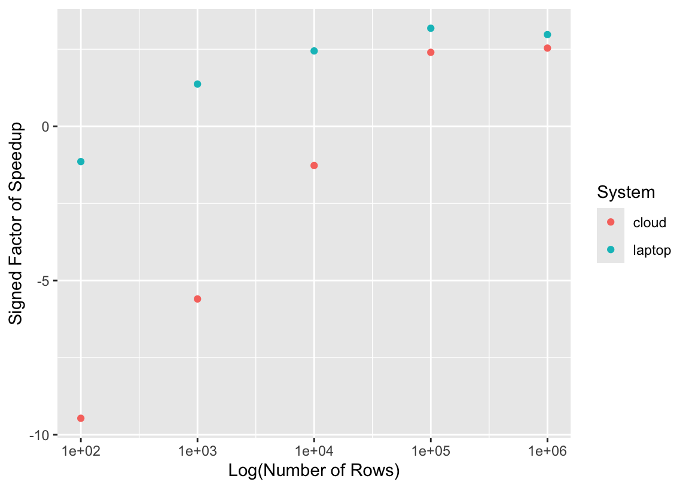

time_resample_bt <- function(n_rows, plan) {
# simulate data with n_rows rows
set.seed(1)
d <- simulate_regression(n_rows)
# set up a parallelism plan
# set `workers = 4`, which will be ignored for `plan = "sequential"`.
if (plan == "multicore") {
rlang::local_options(parallelly.fork.enable = TRUE)
}
if (plan == "multisession") {
rlang::local_options(future.globals.maxSize = 1024*1024^2) # 1gb
}
suppressWarnings(
plan(plan, workers = 4)
)
# track the elapsed time to...
bench::mark(
resample =
fit_resamples(
# ...evaluate a boosted tree ensemble...
boost_tree("regression"),
# ...modeling the outcome using all predictors...
outcome ~ .,
# ...against a 10-fold cross-validation of `d`.
vfold_cv(d, v = 10)
),
memory = FALSE
)
}3 Parallel computing
…
Above all, my question is: how can I reduce the time to train machine learning models by utilizing the handful of CPU cores (and maybe even the snazzy GPU) on my laptop?
3.1 Across-models
In Chapter 1, one of the changes I made to greatly speed up that resampling process was to introduce an across-models parallel backend. By “across-models,” I mean that each individual model fit happens on a single CPU core, but I allot each of the CPU cores I’ve reserved for training a number of model fits to take care of.
Phrased another way, in the case of “sequential” training, all 120 model fits happened one after the other.

While the one CPU core running my R process works itself to the bone, the other remaining 9 are mostly sitting idle (besides keeping my many browser tabs whirring). CPU parallelism is about somehow making use of more cores than the one my main R process is running on; in theory, if \(n\) times as many cores are working on fitting models, the whole process could take \(1/n\) of the time.

Why do I say “in theory”? The orchestration of splitting up that work is actually a very, very difficult problem, for two main reasons:
Getting data from one place to another: Each of us has likely spent minutes or even hours waiting for a call to
load()on a big old.RDataobject to complete. In that situation, data is being brought in from our hard disk or a remote database (or even elsewhere in memory) into memory allocated by our R process. R is a single-process program, so in order to train multiple models simultaneously, we need multiple R processes, each able to access the training data. We then have two options: one would be to somehow allow each of those R processes to share one copy of the data (this is the idea behind forking, described in Section 3.1.2), the other to send a copy of the data to each process (the idea behind socket clusters, described in Section 3.1.3). The former sounds nice but can become a headache quite quickly. The latter sounds computationally expensive but, with enough memory and sufficiently low latency in copying data (as would be the case with a set of clusters living on one laptop), can often outperform forking for local workflows.Load balancing: Imagine I have some machine learning model with a hyperparameter \(p\), and that the computational complexity of that model is such that, with hyperparameter value \(p\), the model takes \(p\) minutes to train. I am trying out values of \(p\) in \(1, 2, 3, ..., 40\) and distributing model training across 5 cores. Without the knowledge of how \(p\) affects training times, I might send models with \(p\) in \(1, 2, 3, ...8\) off to the first core, \(9, 10, 11, ..., 16\) off to the second core, and so on. In this case, the first core would finish up all of its fits in a little over half an hour while the last would take almost 5 hours. In this example, I’ve taken the penalty on overhead of sending all of the training data off to each core, but in the end, one core ends up doing the majority of the work anyway. In this case, too, we were lucky that the computational complexity of model fits relative to this parameter were roughly linear—it’s not uncommon for model fit times to have a quadratic or geometric relationship with the values of important hyperparameters. A critical reader might have two questions. The first: if the computational complexity relative to this parameter is known, why don’t you just batch the values of \(p\) up such that each worker will take approximately the same amount of time? This is a reasonable question, and it relates to the hard problem of chunking. In some situations, related to individual parameters, it really is just about this simple to determine the relationship between parameter values and fit times. In reality, those relationships tend not to be quite so clear-cut, and even when they are, the implications of that parameter value for fit times often depend on the values of other parameters; a pairing of some parameter value \(p\) with some other value of a different parameter \(q\) might cause instability in some gradient descent process or otherwise, making the problem of estimating the fit time of a model given some set of parameter values a pretty difficult problem for some model types. The second question: couldn’t you just send each of the cores a single parameter value and have them let the parent R process know they’re done, at which point they’ll receive another parameter value to get to work on evaluating? That way, the workers that happen to end up with a quicker-fitting values earlier on won’t sit idle waiting for other cores to finish. This approach is called asynchronous (or “async”) and, in some situations, can be quite helpful. Remember, though, that this requires getting data (in the form of the communication that a given worker is done evaluating a model, and maybe passing along some performance metric values) back and forth much more often. If the overhead of that communication exceeds the time that synchronous workers had spent idle, waiting for busier cores to finish running, then the asynchronous approach will result in a net slowdown.
There are two dominant approaches to distributing model fits across local cores that I’ve hinted at already: forking and socket clusters. We’ll delve further into the weeds of each of those approaches in the coming subsections. At a high level, though, the folk knowledge is that forking is subject to less overhead in sending data back and forth, but has some quirks that make it less portable (more plainly, it’s not available on Windows) and a bit unstable thanks to a less-than-friendly relationship with R’s garbage collector. As for load balancing, the choice between these two parallelism techniques isn’t really relevant.
Before I spend time experimenting with these techniques, I want to quickly situate the terminology I’m using here in the greater context of discussions of parallel computing with R. “Sequential,” “forking,” and “socket clusters” are my preferred terms for the techniques I’ll now write about, but there’s quite a bit of diversity in the terminology folks use to refer to them. I’ve also called out keywords (as in, functions or packages) related to these techniques in various generations of parallel computing frameworks in R. In “base,” I refer to functions in the parallel package, building on popular packages multicore (first on CRAN in 2009, inspiring mclapply()) and snow (first on CRAN in 2003, inspiring parLapply()) and included in base installations of R from 2011 onward (R Core Team 2024).
| Technique | future | foreach | base | Synonyms |
|---|---|---|---|---|
| Sequential | sequential() |
Serial | ||
| Forking | multicore() |
doMC | mclapply() |
Process forking |
| Socket Clusters | multisession() |
doParallel | parLapply() |
Parallel Socket Clusters (PSOCK), Cluster, Socket |
3.1.1 Sequential
Generally, in this chapter, I’m writing about various approaches to parallel computing. I’ll compare each of those approaches to each, but also to the sequential (or “not parallel”) approach. Sequential evaluation means evaluating model fits in sequence, or one after the other.
To demonstrate the impacts of different parallelism approaches throughout this chapter, we’ll always start the conversation with a short experiment. I’ll define a function that tracks the elapsed time to resample a boosted tree ensemble against simulated data, given a number of rows to simulate and a parallelism approach.
Here’s a quick example, simulating 100 rows of data and evaluating its resamples sequentially:
t_seq <- time_resample_bt(100, "sequential")
t_seqt_seq# A tibble: 1 × 3
expression median mem_alloc
* <bch:expr> <bch:tm> <bch:byt>
1 resample 201ms 2.19MBIn total, the whole process took 0.2 seconds on my laptop. This expression, among other things, fits a model for each resample on \(n * \frac{v-1}{v} = 100 * \frac{9}{10} = 90\) rows, meaning that even if the model fits took up 100% of the evaluation time in total, they take 0.02 seconds each. In other words, these fits are quite fast. As such, the overhead of distributing computations across cores would have to be quite minimal in order to see speedups with computations done in parallel. Scaling up the number of rows in the training data, though, results in elapsed times becoming a bit more cumbersome; in the following code, we’ll resample models on datasets with 100 to a million rows, keeping track of the elapsed time for each iteration.
press_seq <-
bench::press(
time_resample_bt(n_rows, "sequential"),
n_rows = 10^(2:6)
)For now, the graph we can put together with this data isn’t super interesting:
ggplot(press_seq) +
aes(x = n_rows, y = median) +
scale_x_log10() +
geom_line() +
labs(y = "Log(Elapsed Time)", x = "Number of Rows")
More rows means a longer fit time—what a thrill! In the following sections, we’ll compare this timing to those resulting from different parallelism approaches.
3.1.2 Forking
Process forking is a mechanism where an R process creates an exact copy of itself, called a “child” process (or “worker.”) Initially, workers share memory with the original (“parent”) process, meaning that there’s no overhead resulting from creating multiple copies of training data to send out to workers. So, in the case of tidymodels, each worker needs to have some modeling packages loaded and some training data available to get started on evaluating a model workflow against resample; those packages and data are already available in the parent process, so tidymodels should see very little overhead in shipping data off to workers with forking.
There are a few notable drawbacks of process forking:
There’s no direct way to “fork” a process from one machine to another, so forking is available only on a single machine. To distribute computations across multiple machines, practitioners will need to make use of socket clusters (described in the following section Section 3.1.3).
Forking is based on the operating system command
fork, available only on Unix-alikes (i.e. macOS and Linux). Windows users are out of luck.In practice, memory that is initially shared often ends up ultimately copied due to R’s garbage collection. “[I]f the garbage collector starts running in one of the forked [workers], or the [parent] process, then that originally shared memory can no longer be shared and the operating system starts copying memory blocks into each [worker]. Since the garbage collector runs whenever it wants to, there is no simple way to avoid this” (Bengtsson 2021).
Let’s rerun that experiment from the previous section using forking and compare timings.
press_fork <-
bench::press(
time_resample_bt(n_rows, "multicore"),
n_rows = 10^(2:6)
)We can make the plot from the last section a bit more interesting now.
bind_rows(
mutate(press_seq, Approach = "Sequential"),
mutate(press_fork, Approach = "Forking")
) %>%
ggplot() +
aes(x = n_rows, y = median, col = Approach) +
scale_x_log10() +
geom_line() +
labs(y = "Log(Elapsed Time)", x = "Number of Rows")
Well, if that ain’t by the book! For the smallest training dataset, n = 100, distributing computations across cores resulted in a new slowdown. Very quickly, though, forking meets up with the sequential approach in elapsed time, and by the time we’ve made it to more realistic dataset sizes, forking almost always wins. In case the log scale is tripping you up, here are the raw timings for the largest dataset:
# A tibble: 2 × 3
median Approach n_rows
* <bch:tm> <chr> <dbl>
1 4.13m Sequential 1000000
2 1.34m Forking 1000000Another angle from which to poke at this is how much time did we lose to overhead? Said another way, if I distributed these computations across 4 cores, then I should see a 4-fold speedup in a perfect world. If I divide the time it takes to resample this model sequentially by 4, how does it compare to the timing I observe with forking?
bind_rows(
mutate(press_seq, Approach = "Sequential"),
mutate(press_fork, Approach = "Forking")
) %>%
mutate(median_adj = case_when(
Approach == "Sequential" ~ median / 4,
.default = median
)) %>%
ggplot() +
aes(x = n_rows, y = median_adj, col = Approach) +
scale_x_log10() +
geom_line() +
labs(y = "Log(Elapsed Time Per Core)", x = "Number of Rows")
Per core, no parallel approach will ever be faster than sequential. (If it is, there’s a performance bug in your code!) As the computations that happen in workers take longer and longer, though, the overhead shrinks as a proportion of the total elapsed time.
3.1.3 Socket Clusters
Let’s see how this plays out in practice. Returning to the same experiment from before:
press_sc <-
bench::press(
time_resample_bt(n_rows, "multisession"),
n_rows = 10^(2:6)
)bind_rows(
mutate(press_seq, Approach = "Sequential"),
mutate(press_fork, Approach = "Forking"),
mutate(press_sc, Approach = "Socket Clusters")
) %>%
ggplot() +
aes(x = n_rows, y = median, col = Approach) +
scale_x_log10() +
geom_line() +
labs(y = "Log(Elapsed Time)", x = "Number of Rows")
3.2 Within-models
I’ve only written so far about across-model parallelism, where multiple CPU cores are used to train a set of models but individual model fits happen on a single core. For most machine learning models available via tidymodels, this is the only type of parallelism possible. However, some of the most well-used modeling engines in tidymodels, like XGBoost and LightGBM, allow for distributing the computations to train a single model across several CPU cores (or even on GPUs). This begs the question, then, of whether tidymodels users should always stick to across-model parallelism, to within-model parallelism for the models it’s available for, or to a hybrid of both. We’ll focus first on the former two options in this subsection and then explore their interactions in Section 3.3.
3.2.1 CPU
3.2.2 GPU
XGBoost parallelizes at a finer level (individual trees and split finding), while LightGBM parallelizes at a coarser level (features and data subsets).
XGBoost
arg
deviceiscpuorcuda(orgpu, butcudais the only supporteddevice).arg
nthreadis integeruses openMP for cpu (?)
gpu_histis apparently pretty ripping?
LightGBM
device_typeiscpu,gpu, orcuda(fastest, but requires GPUs supporting CUDA)cudais fastest but only available on Linux with NVIDIA GPUs with compute capability 6.0+gpuis based on OpenCL… M1 Pro is a “built-in” / “integrated”cpuuses OpenMP for CPU parallelismset to real CPU cores (i.e. not threads)
refer to Installation Guide to build LightGBM with GPU or CUDA support
are
num_threadsis integerDask available to Python users
aorsf
n_threadimplements OpenMP CPU threading
keras (MLP)
CPU or GPU
cuda (available only for jax backend?)
also available with tensorflow
h2o stuff
baguette
control_bag(allow_parallel)? does this respect nested parallelism?
While GPU support is available for both libraries in R, it’s not as straightforward to use as in Python. The R ecosystem generally has less robust GPU support compared to Python, which can make GPU-accelerated machine learning in R more challenging to set up and use.
3.3 Within and Across
3.4 Strategy
Choosing n cores and parallel_over…
3.5 Distributed Computing
So far in this chapter, I’ve mostly focused on the performance considerations for distributing computations across cores on a single computer. Distributed computing “in the cloud,” where data is shipped off for processing on several different computers, is a different ball-game. That conversation is mostly outside of the scope of this book, but I do want to give some high-level intuition on how local parallelism differs from distributed parallelism.
The idea that will get you the most mileage in reasoning about distributed parallelism is this: the overhead of sending data back and forth is much more substantial in distributed computing than it is in the local context.
In order for me to benefit from distributing these computations across cores, the overhead of sending data out to workers has to be so minimal that it doesn’t overtake the time saved in distributing model fits across cores. Let’s see how this plays out on my laptop, first:
t_par <- time_resample_bt(100, "multisession")
t_part_par# A tibble: 1 × 3
expression median mem_alloc
* <bch:expr> <bch:tm> <bch:byt>
1 resample 242ms 15MBNo dice! As we know from earlier on, though, we’ll start to see a payoff when model fits take long enough to outweigh the overhead of sending data back and forth between workers. But, but! Remember the high-mileage lesson: this overhead is greater for distributed systems. Let’s demonstrate this.
I’ll first run this experiment for numbers of rows \(100, 1000, ..., 1,000,000\) both sequentially and via socket clusters on my laptop, recording the timings as I do so. Then, I’ll do the same thing on a popular data science hosted service, and we’ll compare results.
bench::press(
time_resample_bt(n_rows, plan),
n_rows = 10^(2:6),
plan = c("sequential", "multisession")
)The resulting timings are in the object timings and look like this:
timings %>%
select(n_rows, plan, median, system) %>%
head()# A tibble: 6 × 4
n_rows plan median system
* <dbl> <chr> <bch:tm> <chr>
1 100 sequential 216.08ms laptop
2 1000 sequential 442.77ms laptop
3 10000 sequential 2.81s laptop
4 100000 sequential 27.8s laptop
5 1000000 sequential 4.03m laptop
6 100 multisession 247.13ms laptopThere’s one timing per unique combination of number of rows, parallelism plan, and system ("laptop" vs "cloud"). Based on these timings, we can calculate the factor of speedup for sequential evaluation versus its parallel analogue.
timings %>%
select(n_rows, plan, median, system) %>%
pivot_wider(names_from = plan, values_from = median) %>%
mutate(
speedup = as.numeric(sequential / multisession),
speedup = if_else(speedup < 1, -1/speedup, speedup)
) %>%
ggplot() +
aes(x = n_rows, y = speedup, col = system) +
geom_point() +
scale_x_log10() +
labs(
x = "Log(Number of Rows)",
y = "Signed Factor of Speedup",
col = "System"
)
In this plot, a signed speedup value of 2 would mean that the socket cluster (i.e., parallel) approach was twice as fast, while a value of -2 would mean that the sequential approach ran twice as fast as the socket cluster approach. In general, larger numbers of rows (and thus longer-running model fits) tend to be associated with greater speedups as a result of switching to parallel computing. For local clusters on my laptop, the overhead of passing data around is small enough that I start to see a payoff when switching to parallel computing for only 1000 rows. As for the cloud system, though, model fits have to take a long time before switching to parallel computing begins to reduce elapsed times.
The conclusion to draw here is not that one ought not to use hosted setups for parallel computing. Aside from the other many benefits of doing data analysis in hosted environments, some of these environments enable “massively parallel” computing, or, in other words, a ton of cores. In the example shown in this chapter, we fitted a relatively small number of models, so we wouldn’t necessarily benefit (and would likely see a slowdown) from scaling up the number of cores utilized. If we had instead wanted to tune that boosted tree over 1,000 proposed hyperparameter combinations—requiring 10,000 model fits with a 10-fold resampling scheme—we would likely be much better off utilizing a distributed system with higher latency (and maybe even less performant individual cores) and 1,000 or 10,000 cores.